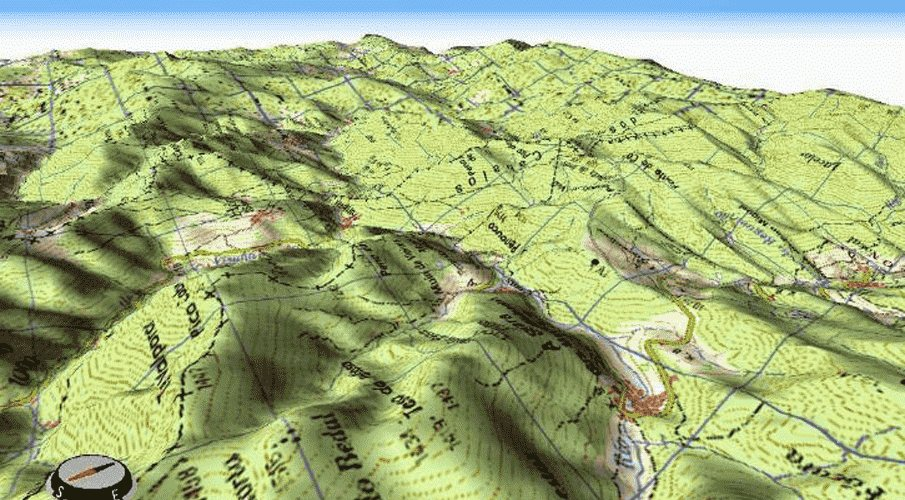

Gente de catastro, desde 1987.
GEO INGENIERÍA es una empresa de Badajoz, constituida en 2010, cuyos técnicos trabajan en el catastro desde 1987.

En el gabinete y en el campo.
El catastro es el centro del oficio: cómo se forma, cómo se conserva y cómo se corrige. De ahí sale todo lo demás, de una segregación a un estudio ambiental.
Lo que llevamos en la furgoneta y en el ordenador.
Dron DJI Mavic 3 con RTK
Ortofoto de detalle, modelo del terreno, curvado de nivel y nivelaciones. confirmar modelo exacto
Receptor GNSS con RTK
Posición centimétrica para comprobar en campo y dibujar planos de parcela.
Inteligencia artificial propia
Una red neuronal entrenada por nosotros, que se adapta a lo que haya que buscar. Siempre con revisión humana.
Programas propios
Para el Catastro, el padrón y las imágenes de revisión.
Cinco reglas que vienen de errores reales.
Nada se inventa
Lo que no se sabe se marca como pendiente y se dice.
Primero se comprueba
Cada encargo empieza con un análisis que no toca nada.
Ante la duda, se pregunta
Terminar bien sobre datos equivocados es el error más caro.
Se respeta lo ya hecho
Un proceso automático no pisa el trabajo de otro.
Nada sale en blanco
Lo que no se resuelve sale con su motivo escrito.
De dónde sale cada dato.
| Fuente | Para qué sirve | Qué no aporta |
|---|---|---|
| Sede del Catastro | Referencias, superficies, construcciones y fichas | No acredita titularidad ni linderos jurídicos |
| Ortofoto oficial | Base cartográfica y fecha del vuelo | No sustituye a una medición |
| Vuelo con dron | Detalle y terreno a fecha de hoy | No tiene valor oficial por sí solo |
| Nota simple | Descripción registral y cargas | La cabida inscrita puede no ser la real |
| Visita a campo | El estado real de la finca | No corrige una discrepancia documental |
Lo de un expediente se queda en el expediente.
No enseñamos fincas, clientes ni cifras de valoraciones. Por eso esta web no tiene casos con nombre.
Badajoz.
Calle Matilde Tagle Ortiz, 28, 5.º D, 06006 Badajoz
924 253 530
Cuéntenos qué necesita.
Le atiende un técnico, no una centralita. Si no es un trabajo que podamos hacer bien, se lo decimos en la primera llamada.
- emiliocontadorbrito@gmail.com
- Calle Matilde Tagle Ortiz, 28, 5.º D, 06006 Badajoz